Вклад пока не измерен
Calltouch подключён недавно. Перед выводами проверим переходы, обращения и доступную связь с CRM.
SMM-стратегия и ведение ВКонтакте, Telegram, Instagram и MAX. Выстроим контент вокруг запросов пациентов и близких, покажем специалистов и будем оценивать путь от публикации до обращения.
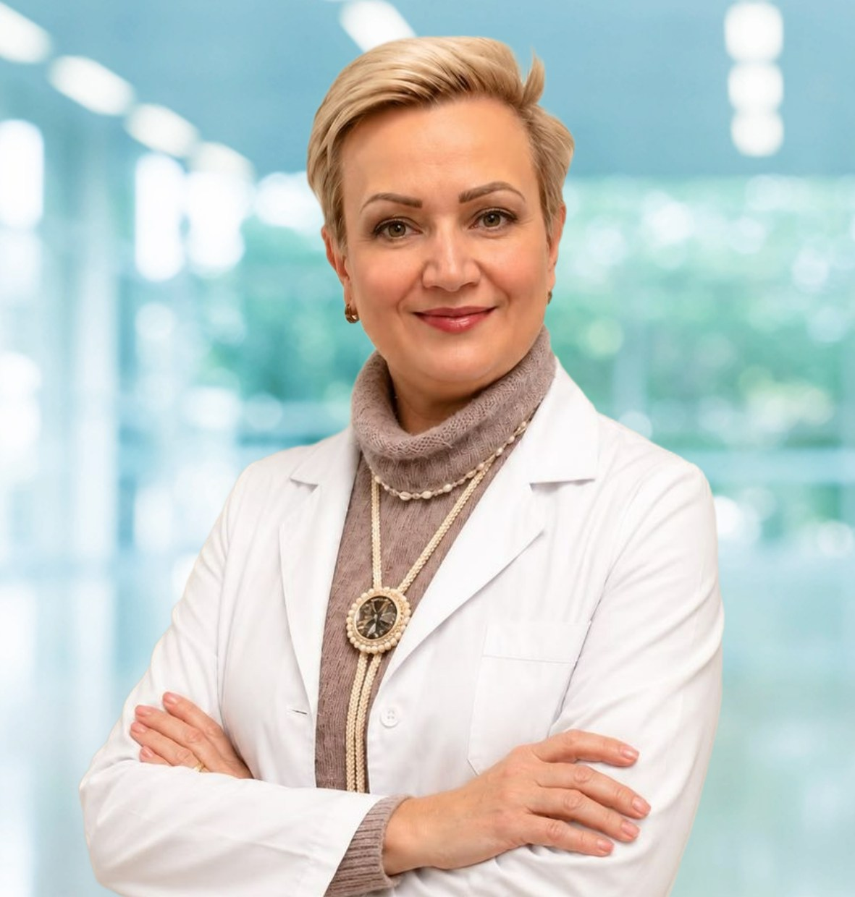
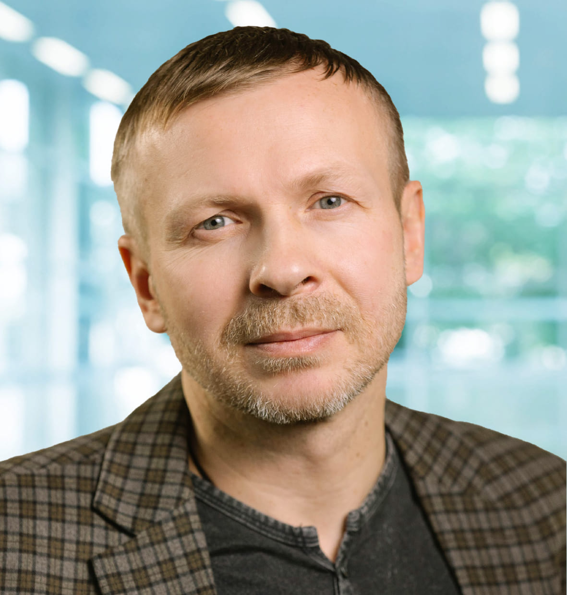
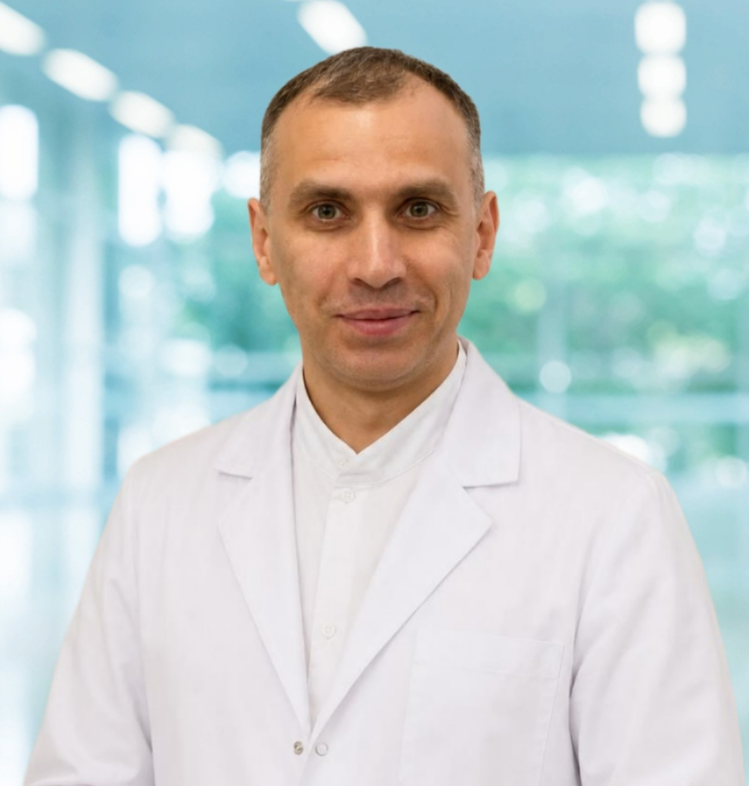
Соцсети уже ведутся, но вклад каждой площадки в обращения пока не измерен. На встрече вы обозначили приоритет: привлекать новых пациентов на консультации и программы помощи.
В разговоре вы описали разные ситуации: родственники ищут помощь для близкого; часть людей обращается самостоятельно; отдельной аудитории важна возможность сочетать работу и программу помощи. Им нужны разные объяснения, доказательства и следующий шаг.
Свяжем темы публикаций с услугами и согласуем, какие данные нужны, чтобы оценивать вклад каждой площадки.
Calltouch подключён недавно. Перед выводами проверим переходы, обращения и доступную связь с CRM.
Встреча показала запрос на анализ аудитории, конкурентов и понятную стратегию вместо хаотичных публикаций.
Для консультации, амбулаторной и загородной программ нужны разные сценарии общения с человеком и его семьёй.
Сайт предлагает консультацию, в Telegram есть видео и материалы для близких, в RUTUBE — библиотека роликов. Свяжем темы публикаций с конкретными услугами и проверим, какие материалы приводят к обращениям.
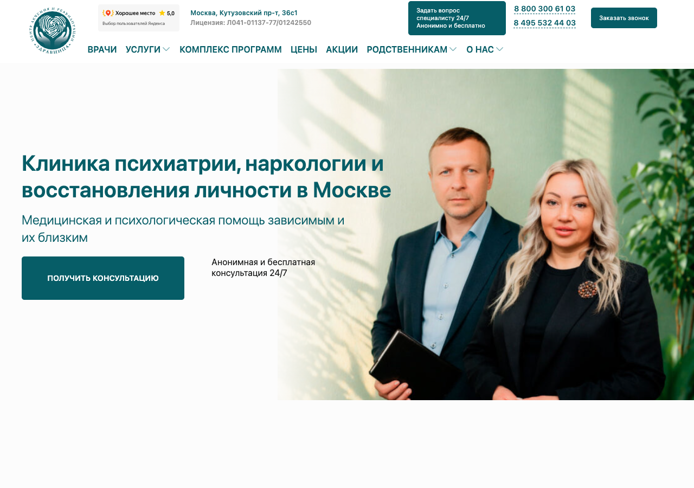
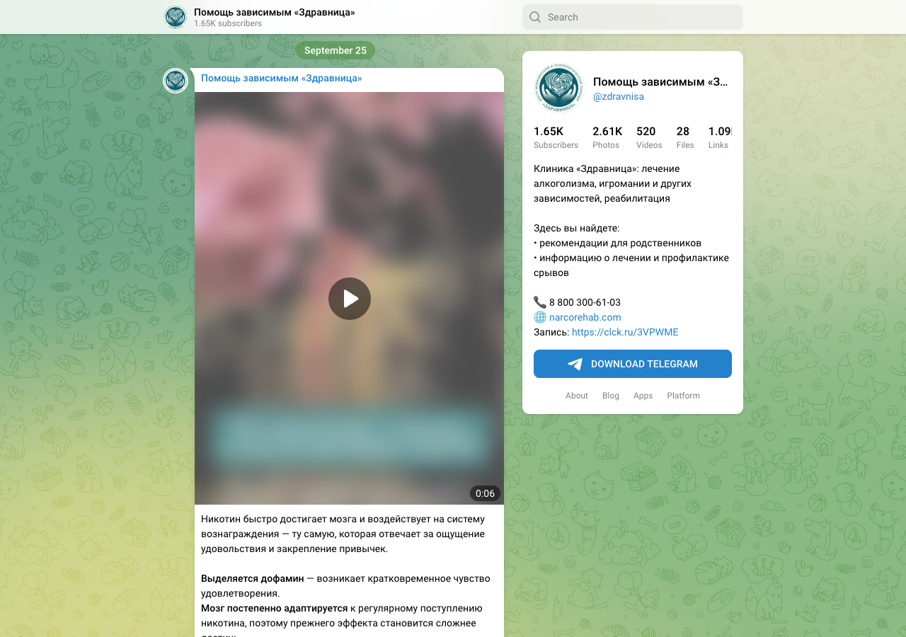
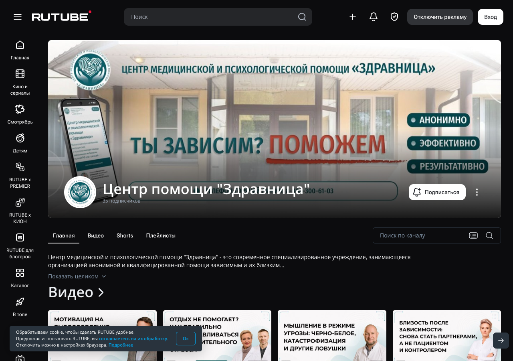
На канале уже опубликованы ролики. Выберем сильные темы, нарежем короткие форматы и добавим в каждом материале понятный переход к консультации.
Открыть канал ↗Карточку на Яндекс Картах, ПроДокторов и НаПоправку: актуальные оценки, темы похвалы и претензий, ответы команды, единый адрес и маршрут записи.
Сверить карточки и контактные данные; согласовать, кто и как отвечает на отзывы; отдельно разбирать серьёзные претензии с руководителем и врачом. Собирать обратную связь после визита бережно и с согласия человека.
Портреты специалистов, работа команды и пространство центра уже есть на сайте. Используем эти материалы в рубриках и запланируем новые съёмки. Истории пациентов — только с отдельным согласием.


Начинаем с SMM-стратегии. Она связывает направления помощи, аудитории, темы и измерение результата. Затем команда выпускает контент по согласованному плану.
Аудит аккаунтов, материалов, маршрутов обращения, конкурентов по приоритетным услугам и доступной аналитики.
Роли площадок, сегменты аудитории, позиционирование, рубрики, визуальный стиль, контентная воронка и план на 3–6 месяцев.
Темы, сценарии, задания для съёмки, материалы со специалистами, дизайн, монтаж, согласование и публикации.
Ежемесячный разбор охватов, переходов и обращений. Для оценки вклада SMM используем данные площадок, сайта и доступные данные Calltouch/Bitrix24.
Экспертные объяснения, видео, карточки, события и удобный переход к консультации.
Более подробные ответы, разборы вопросов родственников и анонсы встреч со специалистами.
Лица команды, короткие видео, условия центра и понятные истории о помощи.
Адаптация ключевых материалов и дополнительная точка контакта.
Специалист объясняет, кому можно обратиться, как оценивается ситуация и что происходит после разговора.
Бережный разбор того, какой первый шаг может сделать семья и с кем обсудить ситуацию.
Различия форматов, критерии выбора и роль специалистов без универсальных обещаний.
Компетенции, подход к разговору и ответы на частые опасения пациентов.
Реальные пространства и повседневная работа. Съёмка пациентов — только при отдельном согласии.
Короткий анонс, главный вопрос встречи и понятное продолжение после вебинара.
На скриншотах — конкретные публикации и страницы конкурентов. Берём формат и вопрос аудитории, а содержание создаём на основе специалистов и материалов «Здравницы».
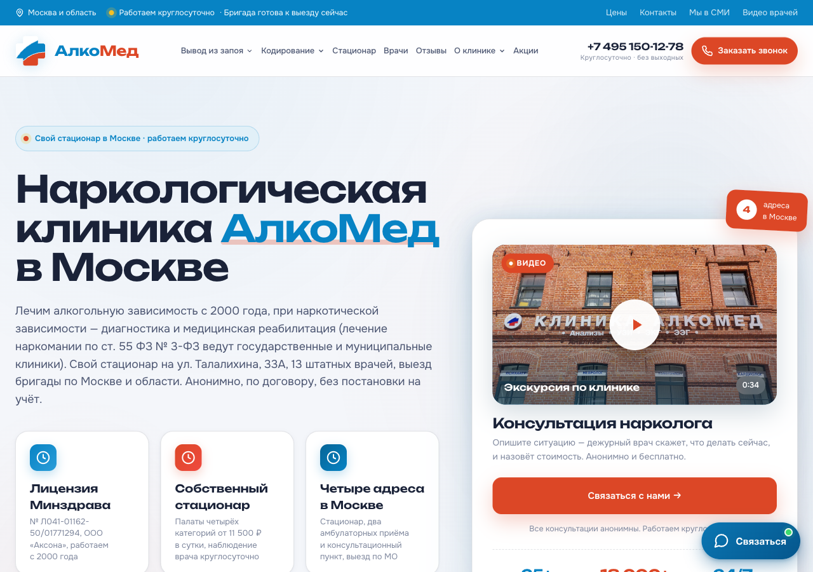
«АлкоМед» выводит экскурсию по клинике рядом с первым шагом. Для «Здравницы» — короткое видео о пространстве, маршруте визита и команде.
Источник: АлкоМед ↗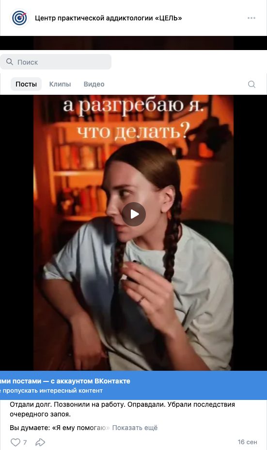
«Цель» разбирает поведение близких в отдельном ролике. Для «Здравницы» — серия ответов семье без обвинительного тона.
Источник: пост «Цели» ↗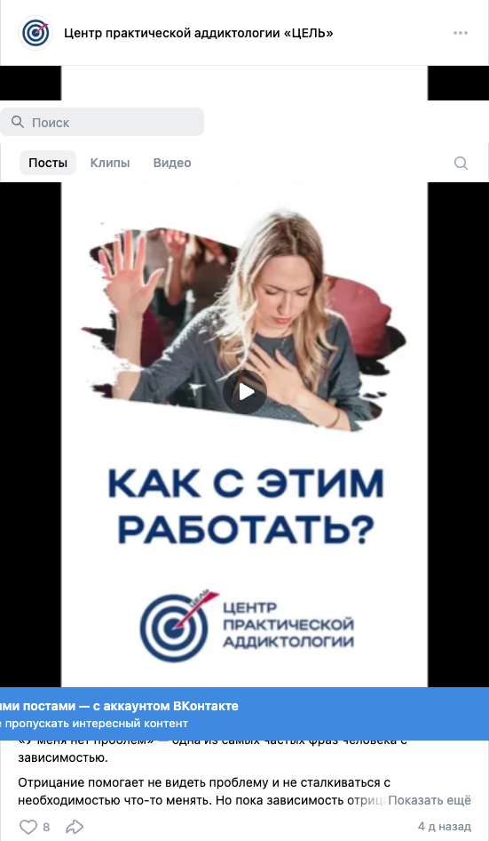
Ролик «Цели» посвящён отрицанию проблемы. Для «Здравницы» — врач или психолог объясняет, как начать разговор и когда нужна консультация.
Источник: пост «Цели» ↗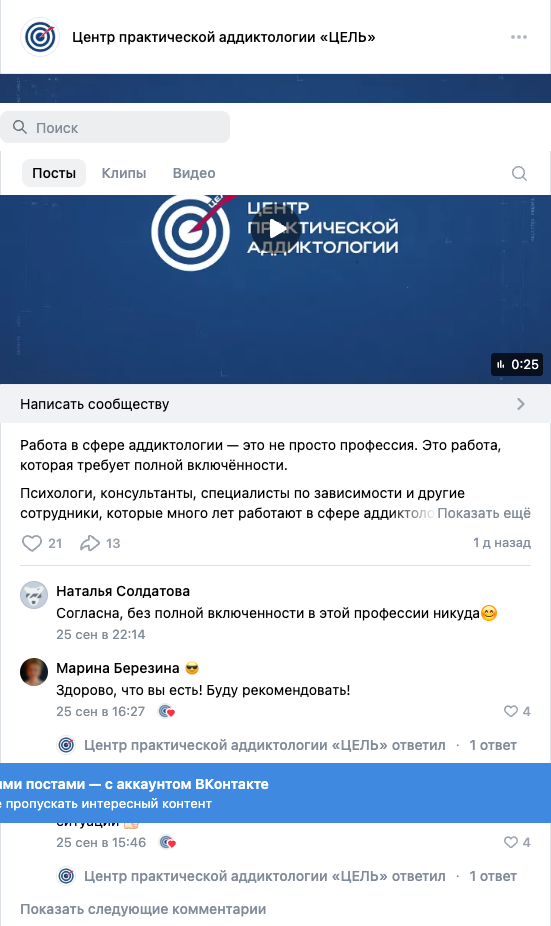
«Цель» показывает работу людей, которые сопровождают программу. Для «Здравницы» — короткие знакомства с врачами, психологами и координаторами.
Источник: пост «Цели» ↗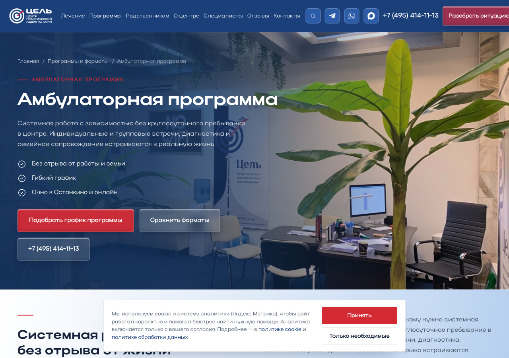
«Цель» сразу объясняет жизнь без круглосуточного проживания. Для «Здравницы» — карточки или видео о критериях выбора формата.
Источник: ЦПА «Цель» ↗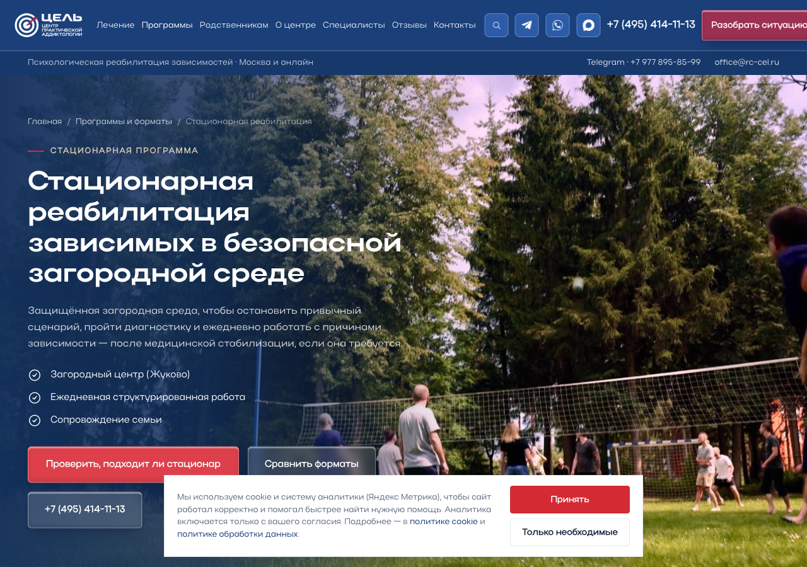
Загородная программа «Цели» подкреплена реальным фото пространства и активности. Для «Здравницы» — съёмка территории, режима и условий с разрешения участников.
Источник: ЦПА «Цель» ↗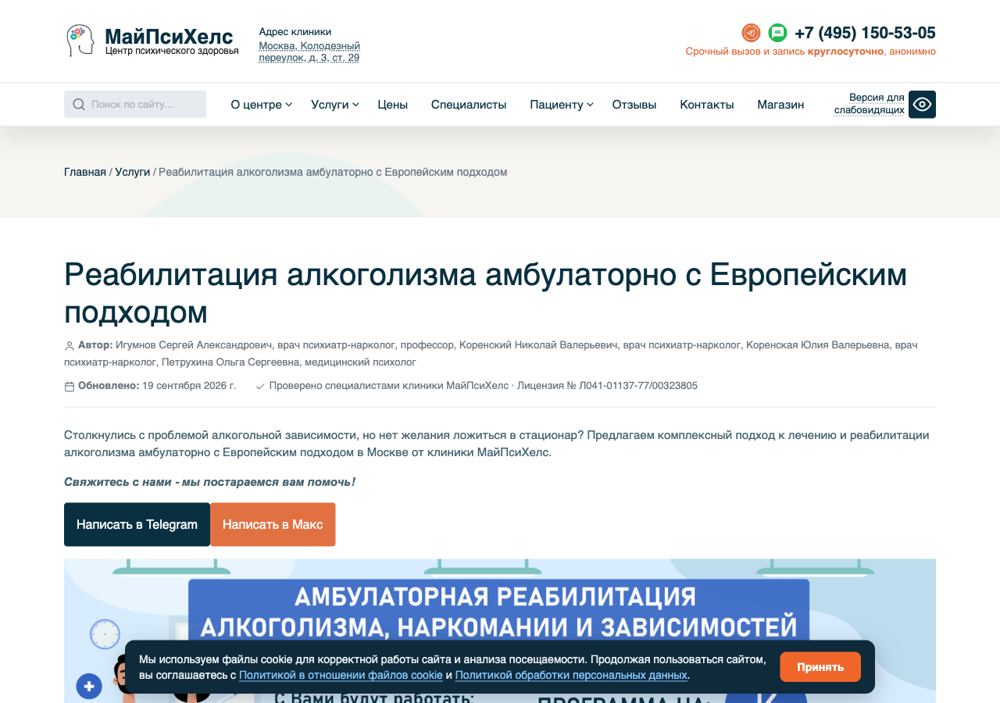
MyPsyHealth указывает авторов и проверку материала. Для «Здравницы» — объяснения от названного специалиста, с согласованными формулировками.
Источник: MyPsyHealth ↗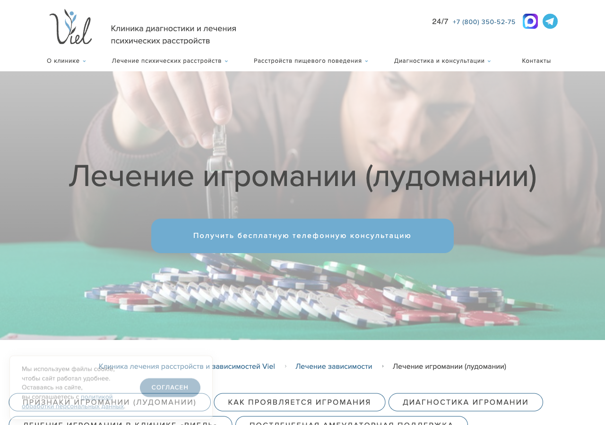
«Виель» даёт игромании самостоятельный маршрут. Для «Здравницы» — отдельная рубрика для человека с игровой проблемой и его близких.
Источник: Виель ↗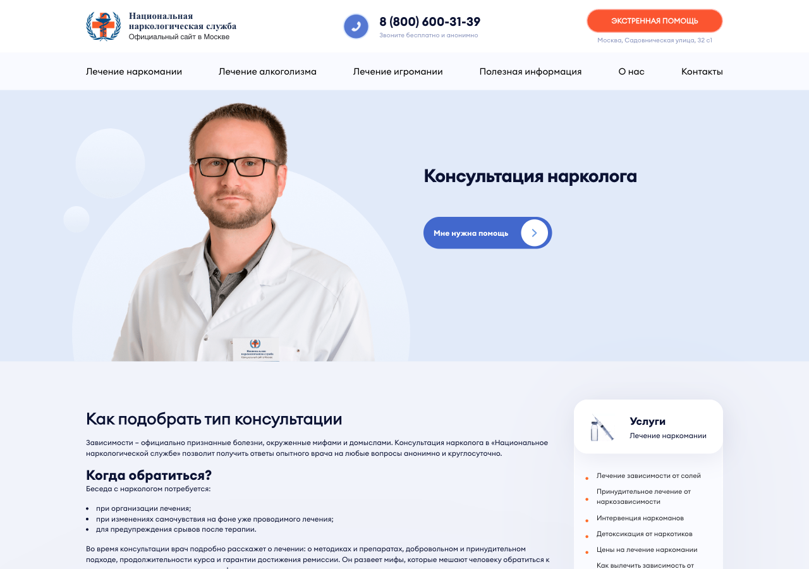
Конкурент показывает конкретного специалиста и услугу. Для «Здравницы» — ролик «как проходит первая встреча» с чётким следующим действием.
Источник: Наркологическая служба ↗По каждой из шести приоритетных услуг изучили пять конкурентов. В карточках — скриншот, сильная сторона подачи и идея для контента «Здравницы».
Медицинская и психологическая помощь людям с зависимостью и их близким. В коммуникации показываем разные форматы и роли специалистов, не смешивая юридические лица и партнёрские программы.
Консультация — понятный вход в разговор. Первые месяцы раскрываем запросы семьи, ситуации самостоятельного обращения, алкогольную и наркотическую зависимость. Игромания и выбор амбулаторной или загородной программы получают отдельные сценарии.
Истории пациентов используем только с их согласия и после проверки медицинских формулировок.
Человек видит, кто будет с ним говорить и какие вопросы можно задать.
Отдельные страницы и публикации помогают понять разницу между консультацией, амбулаторной и программой с проживанием.
После каждого материала остаётся конкретное действие: задать вопрос, узнать формат или записаться.
Рабочая гипотеза для «Здравницы»: соединить врачебное объяснение с поддержкой близких и реальным опытом первого обращения. Проверим её в стратегии на данных аудитории и заявок.
Аудит, сегменты аудитории, анализ конкурентов по направлениям, позиционирование, роли площадок, рубрики, примеры форматов, метрики и дорожная карта. Результат — отдельный документ и презентация решения.
Работа видеооператора оплачивается отдельно. Количество часов согласуем перед съёмкой.
Платное продвижение, интеграции и размещения. Объём, юридические ограничения и бюджеты — отдельно после постановки задачи.
SERM, проверка карточек, сквозной маршрут обращения и обучение администраторов. Состав и стоимость уточняются.
Дизайн, сайт, посадочные страницы и технические доработки. Оцениваются отдельно.
Рекламные бюджеты, сервисы и сторонние размещения не входят в стоимость ведения соцсетей.
Проверяем площадки, аналитику и приоритетные услуги. Согласуем аудитории, позиционирование, рубрики и медицинские формулировки.
Снимаем специалистов и центр, собираем контент-план, адаптируем материалы для четырёх площадок и запускаем публикации.
Сверяем данные площадок, сайта и доступной CRM: какие темы дают переходы, обращения, записи и визиты.
Напишите менеджеру ПикАрт. Согласуем приоритетные услуги, пакет ведения и график съёмок, затем подготовим план первого месяца и окончательную смету.
Обсудить запуск в Telegram ↗